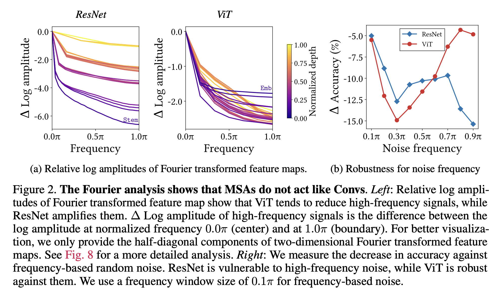

2 How ViTs Work
This paper investigates how Multi-head Self Attention (MSA) works and compares properties of MSA layers to CNN layers. Both CNN and MSA have some good and bad properties, the authors propose an architecture that tries to exploit the cons of each.
MSA are good at detecting shape
MSA are low-pass filters while CNNs are high pass filters.
This means that MSA should be more sensitive to shapes in the image vs. CNNs being better at detecting texture (Naseer et al. 2021)
The authors demonstrate the high/low pass divide by analyzing feature map frequencies. For conv-nets high frequencies in deeper feature are stronger while for MSA the picture is opposite, that is lower feature 
Trained CNN models won’t change the way they aggregate feature into new features (won’t change filter weights). MSAs on the other hand will produce filter weights based on the data. CNN has a filter for each channel, MSA has a single weight for all channels.
Data specific filters improve performance
Attention mask is determined based on the input data, that is, the way you do the pooling is data dependent. The paper shows that probably this is the property that makes ViTs great and not the long range dependency. Also, introducing inductive bias to image data (making attention work on a local environment like convs) improves ViT performance.
Optimization Perspective
This is of less interest to me, but paper re-affirms that MSA produce smoother loss surfaces. You can see the smoothness in smaller eigenvalues of the Hessian and smoother optimization trajectories for MSAs vs CNNs.
On the other hand, MSAs have a highly non-convex loss functions (vs. ResNets that are practically convex). It seems that large datasets help convexify the losses (why is that? I don’t have a good intuition on this point). Also, smoothing the loss landscape (by smoothing features before classification or using Sharpness Aware Minimization (Foret et al. 2020) helps reduce negative eignevalues for ViTs.
Questions
- What is the intuition behind larger dataset make the loss function of MSA more convex?
- Why data specificity is a good thing? I would love to read more about this.
Sources
- Park and Kim (2022)